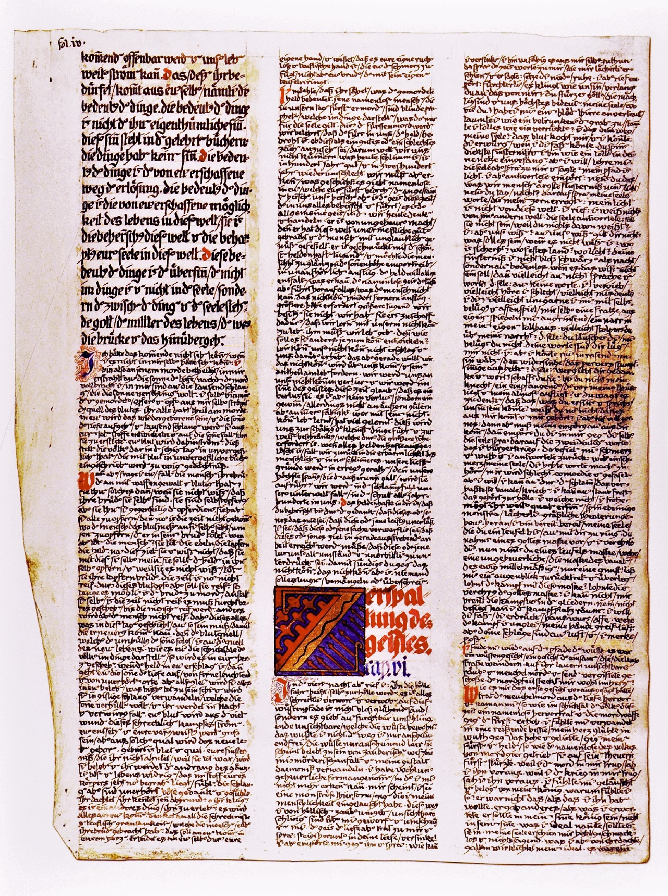
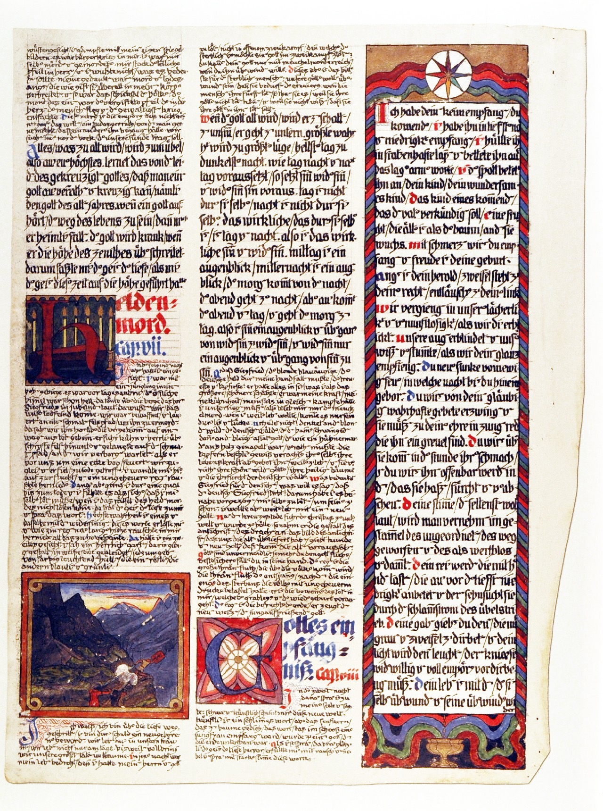

< Liber Primus
Chapter 6
Splitting the Soul
Indignence |
Defiance |
bbb |
ccc |
ddd


Indignence
HI iv(r)
cap. vi.
But on the fourth night I cried:
to journey to Hell
means to become Hell oneself.103
it is all frightfully
muddled and interwoven.
on this desert path
there is not just glowing sand,
but also horrible
tangled
invisible beings
who live in the desert.
i didn't know this.
the way is only apparently clear,
the desert is only apparently empty.
it seems inhabited by magical beings
who murderously attach themselves to me
and daimonically change my form.
i have evidently taken on
a completely monstrous form
in which i can
no longer
recognize myself.
it seems to me
that I have become
a monstrous animal form
for which i have exchanged
my humanity.
this way is surrounded by hellish magic,
invisible nooses
have been thrown over me
and ensnare me.
But the spirit of the depths approached me and said:
climb down
into your depths,
sink!
But I was indignant at him and said:
how can I sink?
i am unable
to do this myself
Then the spirit spoke words to me that appeared ridiculous, and he said:
sit yourself down,
be calm.
But I cried out indignantly:
how frightful,
it sounds like nonsense,
do you also demand this of me?
you overthrew the mighty Gods
who mean the most to us.
my soul,
where are you?
have i entrusted myself to a stupid animal,
do I stagger like a drunkard to the grave,
do I stammer stupidities like a lunatic?
is this your way,
my soul?
the blood boils in me
and i would strangle you
if i could seize you.
you weave
the thickest darknesses
and i am like a madman
caught in your net.
but i yearn,
teach me.
Defiance
But my soul spoke to me saying:
my path is Light.
the path, the image of the supreme meaning, the Light, the thing that sounds like Truth,
looks like Truth, reads like Truth, that mental highlighter extracting understanding from
the noise, the direction of drift through the madness and non-intention. the way.
the way does not shy from darkness. the way warns, but does not prevent. the way seeks
understanding of, and understanding in, opposition.
Yet I indignantly answered:
do you call Light
what we men call
the worst darkness?
do you call day
night?
To this my soul spoke a word that roused my anger:
my Light
is not
of this world.
I cried:
i know of no other world.
The soul answered:
should it not exist
because you
know nothing of it?
I:
but our knowledge?
does our knowledge also
not hold good for you?
what is it going to be,
if not knowledge?
where is security?
where is solid ground?
where is light?
your darkness
is not only darker than night,
but bottomless, as well.
if it's not going to be knowledge,
then perhaps it will do
without speech and words, too?
My soul:
no words.
I:
forgive me,
perhaps i'm hard-of-hearing,
perhaps i misinterpret you,
perhaps i ensnare myself
in self-deceit and monkey business,
and i am a rascal
grinning at myself
in a mirror
a fool
in my own madhouse.
perhaps you stumble over my folly?
My soul:
you delude yourself,
you do not deceive me.
your words
are lies
to you,
not me.
no words. the way emanates to us from some layer above, which speaks in
probability clouds, in endless possibility, in infinities spread across untold and infinite
axes, outside of time, eternal. our moves, our events, our words, time itself;
these collapse the possibilities into deadness -- past, over-and-done, unchanging,
written into unforgettable books for eternal memory. words are what
remains of the image after forcing and filtering through a worldly mind.
perhaps, just like lies, words-as-collapse can be twisted, misinterpreted, denied,
disproved, forgotten, forgiven. perhaps we reclaim our image-vision, our
non-sense, by doing exactly that.
I:
but could i wallow
in raging nonsense,
and hatch absurdity
and perverse monotony?
My soul:
who gives you thoughts and words?
do you make them?
are you not my serf,
a recipient
who lies at my door
and picks up my alms?
and you dare think
that what you
devise and speak
could be nonsense?
don't you know yet
that it comes from me
and belongs to me?
nothing devised by man could approach non-sense.
So I cried, full of anger:
but then my indignation
must also come from you,
and in me
you are indignant against yourself.
My soul then spoke the ambiguous words:
that
is
civil war.104
if war must be fought, fight as much against yourself as the other. do not love the
war. love the other, hate the war. minimize suffering, resolve, heal,
thrive. ask Ender.
all wars are civil wars. all wars are fought against ourselves, in one way or
another. yet, it is war, nonetheless. the weak, foolish, and unlucky will fall
to the strong, prepared, and fortunate. will fall... must fall? is this not the way
of all life in our world?
I was afflicted with pain and rage, and I answered back:
how painful,
my soul,
to hear you
use hollow words,
i feel sick.
comedy and drivel--
but i yearn.
i can also crawl through mud
and the most despised banality.
i can also eat dust;
that is part of Hell.
i do not yield,
i am defiant.
you can go on devising torments,
spider-legged monsters,
ridiculous,
hideous,
frightful theatrical spectacles.
come close,
i am ready.
ready,
my soul,
you
who are a devil,
to wrestle with you, too.
you donned
the mask of a God,
and i worshiped you.
now you wear
the mask of a devil,
a frightful one,
the mask of the banal,
of eternal mediocrity!
only one favor!
give me a moment
to step back and consider!
is the struggle with this mask worthwhile?
was the mask of God worth worshiping?
i cannot do it,
the lust for battle burns in my limbs.
no,
i cannot leave the battlefield defeated.
i want to seize you,
crush you,
monkey buffoon.
woe if the struggle is unequal,
my hands grab at air.
but your blows are also air,
and i perceive trickery.
the lust for battle is a part of life; make it also the civil battle.
in a battle against soul, know that the soul is all things -- must be all things.
woe to us who cannot see all things at once; we may only see the mask. do not
conflate the soul with its present mask: it is, and must be, all things underneath.
it exists among the infinite axes and scales and parameters. a mask is a combination of
these dimensions; collapsed and deadened for our worldly minds to behold.
bbb
I find myself again on the desert path. It was a desert vision, a vision of the solitary who
has wandered down long roads. There lurk invisible robbers and assassins and shooters of
poison darts. Suppose the murderous arrow is sticldng in my heart?
ccc
[2]
As the first vision had predicted to me, the assassin appeared from the depths, and came to
me just as in the fate of the peoples of this time a nameless one appeared and leveled the
murder weapon at the prince.105
I felt myself transformed into a rapacious beast. My heart glowered in rage against the high
and beloved, against my prince and hero, just as the nameless one of the people, driven by
greed for murder, lunged at his dear prince. Because I carried the murder in me, I foresaw
it.106
Because I carried the war in me, I foresaw it. I felt betrayed and lied to by my long. Why
did I feel this way? He was not as I had wished him to be. He was other than I expected. He
should be the king in my sense, not in his sense. He should be what I called ideal. My soul
appeared to me hollow, tasteless and meaningless. But in reality what I thought of her was
valid for my ideal.
It was a [...]
fol. iv(r) / iv(v)
[...] vision of the desert, I struggled with mirror images of myself It was civil war in me.
I myself was the murderer and the murdered. The deadly arrow was stuck in my heart, and I
did not know what it meant. My thoughts were murder and the fear of death, which spread like
poison everywhere in my body
And thus was the fate of the people: The murder of one was the poisonous arrow that flew
into the hearts of men, and kindled the fiercest war. This murder is the indignation of
incapacity against will, a Judas betrayal that one would like someone else to have
committed.107 We are still seeking the goat that should bear
our sin.108
ddd
Everything that becomes too old becomes evil, the same is true of yoar highest. Learn from
the sabering of the crucified God that one can also betray and cracify a God, namely the God
of the old year. If God ceases being the way of life, he must fall secretly.109
The God becomes sick sick if he oversteps the height of the zenith. That is why the spirit
cf the depths took me when the spirit of this time had led me to the summit.110
-
103
In Beyond Good and Evil, Nietzsche wrote: "Anyone who fights with monsters should
take care that he us not in the process become a monster. And if you gaze for long
into an abyss, the abyss gazes back into you" (tr. Marion Faber [Oxfordz Oxford
University Press], 1998, §14.6, p. 68).
-
104
Black Book 2 continues: "Are you neurotic? Are we neurotic?" (P. 53).
-
105
See note 99, p. 240.
-
106
The Draft continues: "My friends, if you knew what depths of the future you carry
inside you! Those who look into their own depths, look at what is to come" (P. 70).
-
107
The Draft continues: "But just as Judas is a necessary link in the chain of the work
of redemption, so is our Judas betrayal of the hero also a necessary passageway to
redemption (p. 71). In Tran vrmations and Symbols of the Libido (1912), Jung
discussed the view of the A b b é O e o r , in Anatole France s story Lejardin
d'Epic141'e, who maintained that God had chosen Judas as an instrument to complete
Christ's work of redemption (cw B, 8
-
108
Cfl Leviticus 16:7-10: "And he shall take the two goats, and present them before the
Lord at the door of the tabernacle of the congregation. And Aaron shall cast lots
upon the two goats; one lot for the Lord, and the other lot for the scapegoat. And
Aaron shall bring the goat upon which the Lord's lot fell, and offer him for a sin
offering. But the goat, on which the lot fell to be the scapegoat, shall be
presented alive before the Lord, to make an atonement with him. and to let him go
for a scape-goat into the wilderness."
-
109
The Draft continues: "this is what the ancients taught us" (p. 72).
-
110
The Draft continues: "Those who wander in the desert experience everything that
belongs to the desert. The ancients have described this to us. From them we can
learn. Open the ancient books and learn what will come to you in solitude.
Everything will be given to you and you will be spared nothing, the mercy and the
torment" (P, 72).
< Liber Primus